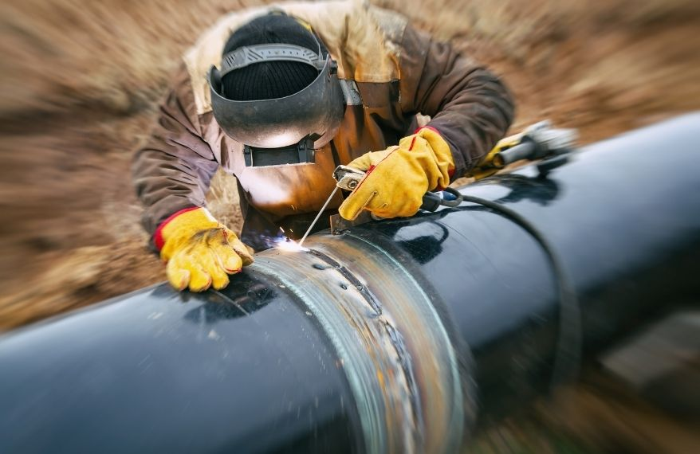

HISTORIA DE LA SOLDADURA
NACIMIENTO DE LA SOLDADURA:
La soldadura tiene una larga historia que se remonta a la Edad de Bronce, cuando los primeros metales comenzaron a ser fundidos y unidos. En sus inicios, las técnicas de soldadura eran rudimentarias y se limitaban a la unión de metales mediante presión o calor. Durante la Edad Media, se desarrollaron los primeros procesos de soldadura por forja, utilizados principalmente en la fabricación de herramientas y armas. En el siglo XIX, la Revolución Industrial impulsó el avance de la soldadura con la invención de nuevas técnicas. En 1800, Humphry Davy desarrolló la soldadura eléctrica, y en 1881, el proceso de soldadura por arco eléctrico fue patentado por Nikolai Benardos. A finales del siglo XIX, la soldadura con oxiacetileno, que utiliza una mezcla de oxígeno y acetileno para generar una llama intensa, revolucionó la industria de la soldadura. Durante el siglo XX, la soldadura experimentó un rápido desarrollo con la creación de nuevos métodos, como la soldadura MIG (Metal Inert Gas) y TIG (Tungsten Inert Gas), que permitieron un control más preciso de la temperatura y la calidad de las uniones. La soldadura se convirtió en una herramienta clave en la construcción de grandes infraestructuras, aeronaves, y vehículos, transformando la fabricación en una industria más eficiente. Hoy en día, la soldadura es indispensable en sectores como la construcción, la fabricación de maquinaria, la automoción y la energía, y sigue evolucionando con la incorporación de tecnologías automatizadas y robots.
QUE ES LA SOLDADURA?
La soldadura es un proceso de unión de materiales, generalmente metales o plásticos, mediante la aplicación de calor, presión o ambos. Su objetivo es fusionar dos piezas de material para formar una unión sólida y duradera. Existen diferentes técnicas de soldadura, pero las más comunes son la soldadura por arco eléctrico, soldadura MIG (Metal Inert Gas), soldadura TIG (Tungsten Inert Gas), y la soldadura con oxiacetileno. En la soldadura por arco eléctrico, se utiliza un electrodo para generar un arco eléctrico que funde las piezas a unir. En la soldadura MIG, se emplea un gas inerte como el argón para proteger el área de la soldadura, mientras que en la TIG, se utiliza un electrodo de tungsteno no consumible para crear el arco y otro material de aporte para fundir las piezas. La soldadura con oxiacetileno utiliza una mezcla de oxígeno y acetileno para producir una llama que funde el material. La soldadura se emplea en una amplia variedad de industrias, como la construcción, la automotriz, la energía y la fabricación de maquinaria, debido a su capacidad para crear uniones fuertes, resistentes y precisas. Además, la soldadura se utiliza tanto en aplicaciones industriales como en reparaciones y mantenimiento de piezas metálicas.

TIPOS DE SOLDADURA:
Existen varios tipos de soldadura, cada uno adecuado para diferentes aplicaciones y materiales. Aquí te dejo los principales tipos de soldadura:
- Soldadura por arco eléctrico (SMAW): También conocida como soldadura de electrodo revestido. Utiliza un electrodo que, al generar un arco eléctrico, funde tanto el electrodo como las piezas a unir. Es versátil y se usa para trabajos en exteriores y en materiales gruesos.
- Soldadura MIG (Metal Inert Gas): Usa un gas protector inerte, como el argón, para proteger la soldadura de la contaminación. Un alambre de aporte se funde y une las piezas. Es fácil de aprender y se utiliza ampliamente en la industria automotriz y para metales finos y gruesos.
- Soldadura TIG (Tungsten Inert Gas): Utiliza un electrodo de tungsteno no consumible para crear el arco eléctrico y un gas inerte para proteger la zona de soldadura. Este proceso permite obtener soldaduras de alta calidad y precisión, utilizado principalmente en materiales delgados y en aplicaciones que requieren un acabado limpio.
- Soldadura por resistencia (RSW): Se utiliza principalmente en la industria automotriz para soldar piezas de metal delgadas. La electricidad pasa a través de las piezas, generando calor que las funde y las une. No requiere material de aporte.
- Soldadura con oxiacetileno (OAW): Usa una llama generada por la mezcla de oxígeno y acetileno para fundir los materiales. Es uno de los procesos más antiguos y se usa tanto para soldadura como para corte de metales. Es adecuado para trabajos pequeños o reparaciones.
- Soldadura por láser: Utiliza un láser para fundir las piezas y unirlas. Es muy precisa, se usa en aplicaciones de alta tecnología, como la fabricación de componentes electrónicos y en la industria aeroespacial.
- Soldadura por fricción (FSW): Emplea la fricción entre las piezas para generar calor y unirlas. Se utiliza principalmente en la industria aeroespacial y en la fabricación de piezas de aluminio.
- Soldadura por ultrasonido: Usa vibraciones ultrasónicas para generar calor y fusionar materiales plásticos o metales. Es utilizada en la industria electrónica y automotriz para unir materiales delicados.
Cada tipo de soldadura tiene sus ventajas y desventajas según el tipo de material, la precisión necesaria, la aplicación y el entorno de trabajo.